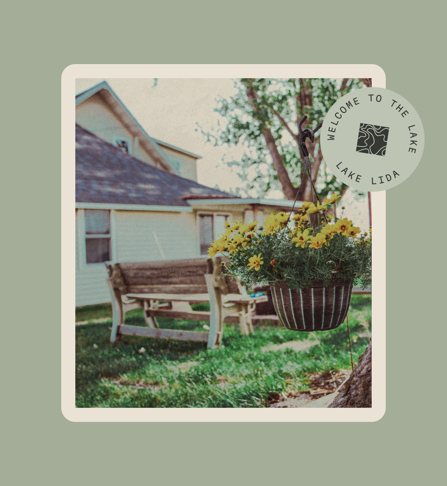
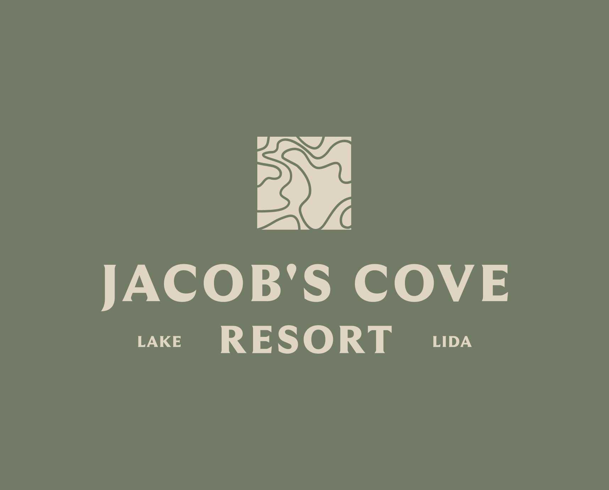
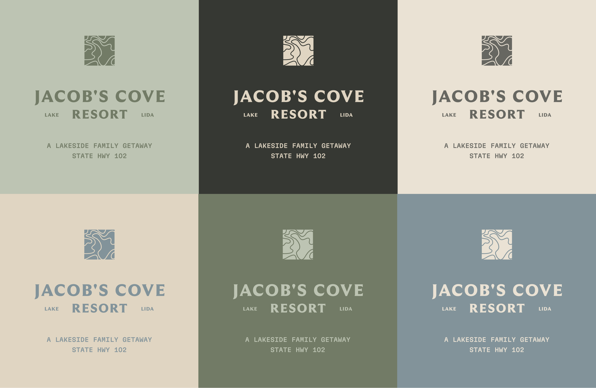
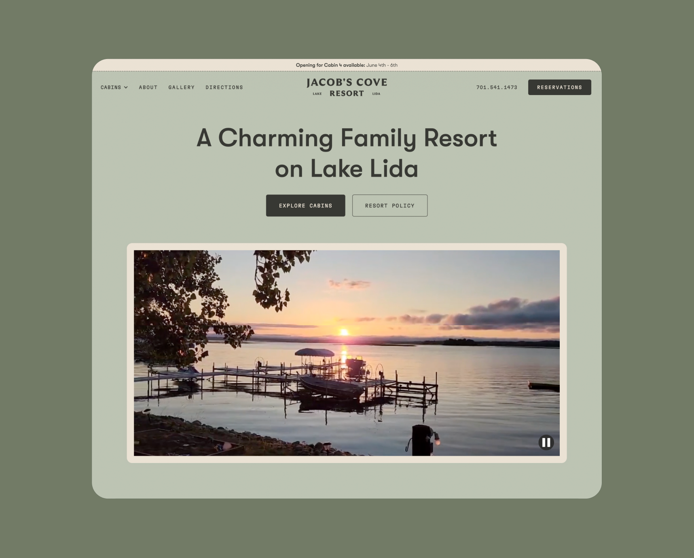
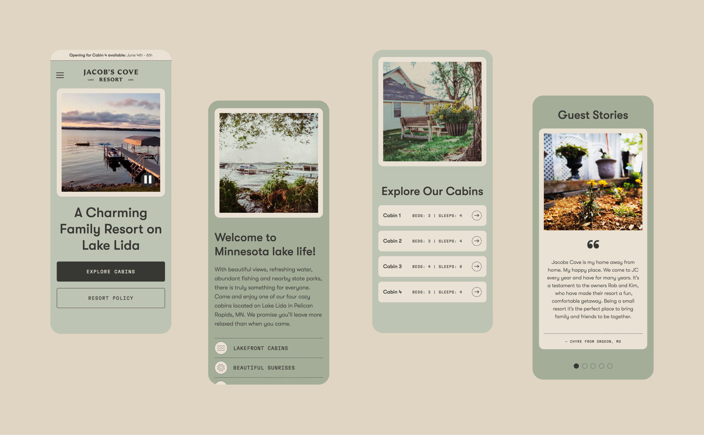
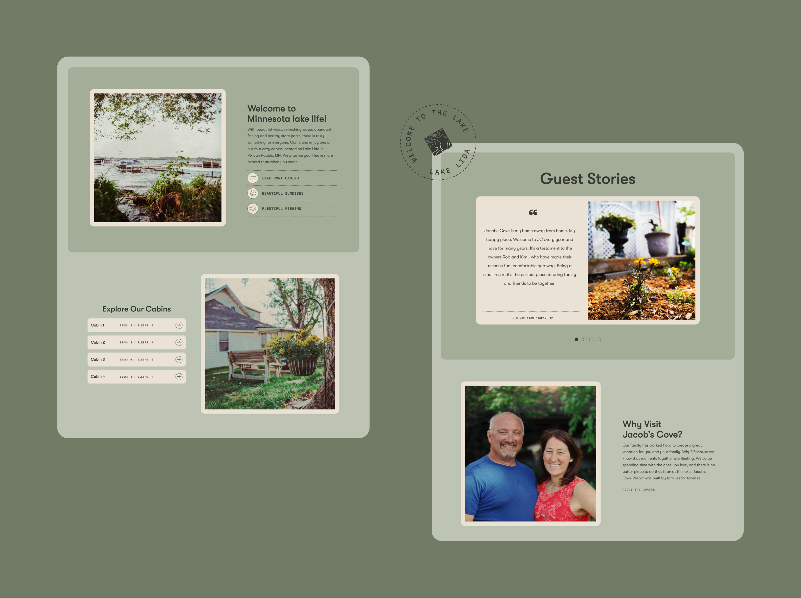
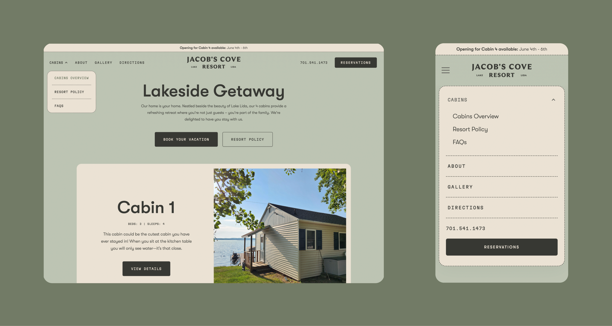
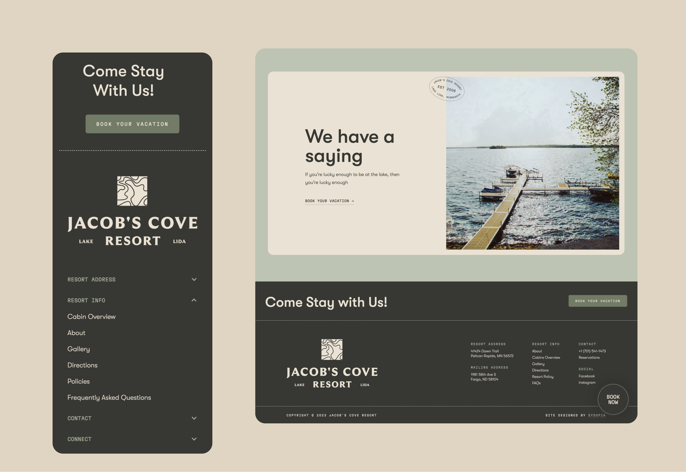

Jacob's Cove Resort
Jacob’s Cove Resort is a family-run retreat on Lake Lida in Minnesota, where guests return year after year for fishing trips, family gatherings, and quiet mornings on the dock. I refreshed the resort’s brand and redesigned its website to honor that history while making it simpler to plan a stay.
Scope
- Visual Identity
- Brand Guidelines
- User Experience
- Content Strategy
- Web Design
- Web Development


Visual Identity
The new identity draws from its surroundings. A topographic symbol echoes the contours of the shoreline, paired with a JCR monogram and a classic serif wordmark. Stamp-style badges, a palette of sage, sky, and sand, and a typewriter-inspired mono typeface give it a well-worn charm, like pages from an old guest logbook.





Web Design
For the website, my goal was to make booking a summer getaway feel as relaxed and inviting as the resort itself. Every element was designed to evoke the nostalgia of decades of lake summers, balanced with practical, straightforward details.
With detailed cabin pages, a streamlined reservation process, and sections for resort policies and frequently asked questions, the site ensures guests have everything they need in one convenient place.
It was named a Typewolf Site of the Day back in 2024.



